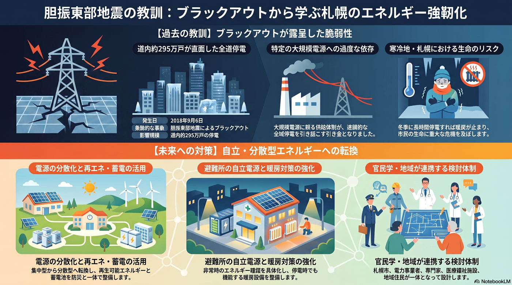

環境・エネルギー
10年以内
電力供給の脆弱性とブラックアウトの教訓
全道停電を経験した札幌は、電力供給の脆弱さへの備えが問われる。

背景
2018年の胆振東部地震では、特定の大規模電源への依存が引き金となり北海道全域が停電（ブラックアウト）した。寒冷地の札幌で冬季に長時間停電すれば暖房が止まり、生命に関わる。電源の分散と非常時のエネルギー確保が重い課題となる。
主要データ
| 胆振東部地震 | 2018年9月6日 |
|---|---|
| ブラックアウトの停電戸数 | 道内約295万戸 |
事実
- 2018年の北海道胆振東部地震では、地震直後に道内全域の約295万戸が停電するブラックアウトが発生した。
- 想定を大きく超える事態で、札幌市は対応検証報告書をまとめ防災体制の強化を課題とした。
解釈
寒冷地で冬季に長時間停電すれば暖房が止まり生命に直結する。電源の分散や再エネ・蓄電と、非常時のエネルギー確保が防災と一体の課題になる。
提案
- 電源の分散化と再エネ・蓄電・自立電源の整備。
- 避難所等への非常用エネルギー確保と停電時の暖房対策。
検討体制・メンバー
札幌市危機管理局と環境・エネルギー部局、電力事業者が連携する。検討会には電力系統・防災の専門家、医療・福祉施設の代表、避難所運営に関わる地域住民を入れ、停電時の暖房と電源確保を具体的に設計する。
AIノート
AIの貢献度は中。電力需給の予測と分散電源・蓄電の最適制御、停電時の優先供給の判断支援に役立つ。再エネ変動の調整にも有効だが、電源の分散・蓄電設備の整備という物理的投資が前提となる。